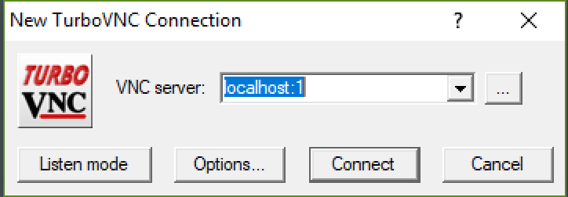
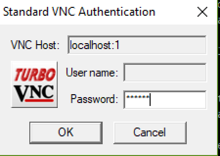

Remote VNC Setup Connection to Access Linux Desktop Apps
OnDemand Users - Linux Desktop and GUI apps
Login into wendian-ondemand.mines.edu or mio-ondemand.mines.edu to short cut many of these steps. A desktop app is available to start any GUI app from the terminal. For single node users, starting fluent from Workbench and selecting the total number of cores that you received is all that is needed. For MULTI-NODE sessions Ansys workbench and the Fluent Launcher configured with the hostnames added to the parallel settings tab.
Basic setup using you own VNC connection app
This guide uses the vncserver TurboVNC installed on Mines HPC platform to access a full
graphics environment in a Linux desktop. Graphic acceleration is available through vglrun
See their documenation about VirtualGL This example, starts
the application Ansys Fluent. Ansys Workbench, Ansys Electronics Desktop, Matlab,
R-studio, Cloud Compare, Paraview,Ovito, and VMD are also available. For Ansys
Fluent version 2024 and above consider using the Ansys Remote Visualization Client.
Software Requirements
Locally installed on your machine a Terminal in Linux or MacOS, and TigerVNC
or MacOS user can use the Screen Sharing App) or your favorite VNC viewer.
Windows users have a Terminal program, Windows PowerShell, to complete the ssh
tunnel steps and SLURM job request.
Mines’ HPC Software Modules
module load apps/ansys/242
For newer versions of Fluent use module avail to see a full list.
Mines’ HPC VNC Server Module
Wendian: module load utility/standard/turbovnc/2.2.4
Mio: module load utility/standard/turbovnc/3.1.1
Step 1: Start an interactive SLURM Job
After logging into Mines’ HPC with a terminal or PowerShell. Requesting a single CPU tasks on a node.
[joeuser@wendian001 ~]$ salloc -n1
salloc: Pending job allocation 12109017
salloc: job 12109015 queued and waiting for resources
salloc: Granted job allocation 12109017
salloc: Waiting for resource configuration
salloc: Nodes compute031 are ready for job
Step 2: Start a VNCserver:
Load the TurboVNC module and the application module of the HPC platform.
module load apps/ansys/242
module load utility/standard/turbovnc
Then start a vncserver on this compute node. The first time you start the vncserver you will be prompted to create a password for when you connect with the VNC viewer. Enter a password and re-enter to verify.
[joeuser@c078 ~]$ vncserver
perl: warning: Setting locale failed.
perl: warning: Please check that your locale settings:
LANGUAGE = (unset),
LC_ALL = (unset),
LANG = "en_US.UTF-8"
are supported and installed on your system.
perl: warning: Falling back to the standard locale ("C").
You will require a password to access your desktops.
Password:
Verify:
New 'compute031:1 (joeuser)' desktop is c078:1
Starting applications specified in /u/aa/bb/joeuser/.vnc/xstartup
Log file is /u/aa/bb/joeuser/.vnc/c078:1.log
Step 3: Identify where the VNCserver started and screen number
In this case, the node is c078 and the screen is :1. Screen port locations start on 5900 for :0 and increase, In this case, the port number will be 5901 for screen :1.
Some useful commands:
To stop a running server use vncserver -kill :1 for screen :1.
To list running servers use vncserver -list.
If you forget your password you can delete the passwd file in your .vnc/ home directory.
Step 4: Setting up a SSH Tunnel
An SSH Tunnel makes it possible to securely connect to through a port on your machine through the SSH protocol to the remote compute node on the Mines’ HPC platform. From your client machine using Linux, MacOS, or Windows PowerShell use this terminal command.
From a new terminal session from your computer (if you’re using Linux pick a different
number for the first port as 5901 is reserved for your current running X-session).
The first number is your local machine port number the second number is the remote compute node
port number 5900 plus the screen number (a value of 1 in this case).
[username@MyComputer ~] % ssh -L 5901:c078:5901 username@wendian.mines.edu
Step 5: Start the VNC Client on your Machine
On Windows download and install TightVNC or TigerVNC or another VNC viewer of your choice. You only need to install the “Viewer” part of the software.
For MacOS you can use “Screen Sharing” which is a VNC client installed with MacOS
(Use Command+Space to use spotlight to search). You can also use the native Mac VNC
Viewer found in /System/Library/CoreServices/Applications/Screen Sharing.app.
Windows: Start the Client VNC that you download and installed.
Using the VNC connection through your SSH tunnel at localhost and the port
number listed first in your Terminal SSH Tunnel configuration. In this case, this is
localhost:5901 or for short screen one at localhost:1

Click connect and enter your VNC password you set in step 2.

The first time you open the connection will receive a configuration prompt. Select “Use default config” settings.
Step 6: Opening the “Terminal Emulator” on the Linux Desktop
You are now connected to the compute node through the localhost and encrypted SSH Tunnel connection. The generic linux desktop windows manager will open. Select from the “Applications Menu” the “Terminal Emulator” program.
Step 7: Start your GUI application
At the command prompt in the Terminal Emulator load the software module and start the program.
For Ansys Fluent this is:
module load apps/ansys/242
For MULTI-NODE you must follow the steps in the next section to configure fluent with the connections and host names.
This will start the fluent launcher from which you choice the number process that the request node has available.
[joeuser@c078 ~]$ fluent
multi-CPU parallel on a single node specify the number of cores with -t
For example, starting fluent in 3d double precision and 8 processors.
[joeuser@c078 ~]$ fluent 3ddp -t8
Fluent using Multiple Nodes
In step 1, request an interactive session with multiple nodes. -N2 for two nodes.
[joeuser@c078 ~]$ salloc -N2
And continue through steps 2-6.
pre-Step 7: Preparing Fluent Node Connection List
Fluent uses a file with a list of hostnames for each unique host that will run an MPI fluent process,
one per line. This list is give as an arguement at startup -cnf=hostname1,hostname2,etc or a filename.
Use this commmand to create a file from the SLRUM variable into a file name stored in the variable FL_SCHEDULER_HOST_FILE, or simple give it a filename here.
[joeuser@c078 ~]$ scontrol show hostnames "$SLURM_JOB_NODELIST" >> $FL_SCHEDULER_HOST_FILE
Mulit-node Step 7: Starting the Fluent Application
Fluent application started with this CPU core count number, and the flag “-cnf=node_hostnames” as follows. Know that the HPC Cluster Wendian has 36-cpu machines and the requested number of nodes is 2.
[joeuser@c001 ~]$ fluent 3ddp -t56 -cnf=c001,c002
OR using a file as the input.
[joeuser@c001 ~]$ echo $FL_SCHEDULER_HOST_FILE
hostname_file
[joeuser@c001 ~]$ cat $FL_SCHEDULER_HOST_FILE
c001
c002
[joeuser@c001 ~]$ fluent 3ddp -t56 -cnf=$FL_SCHEDULER_HOST_FILE
See Startup options for Ansys Fluent at the command line, and fluent job scheduler startup options for launching directly from the login node.